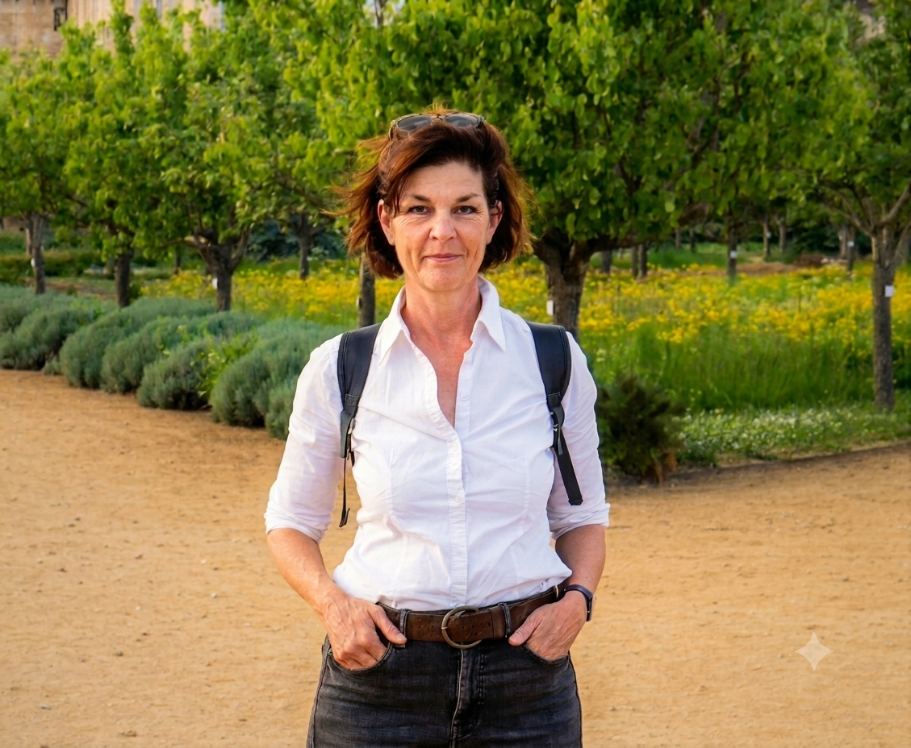

Accompagner votre enfant, à son rythme, dans son quotidien.
Éducatrice de jeunes enfants (E.J.E, Diplôme d'État), je propose un projet individuel d'accompagnement socio-éducatif pour les enfants porteurs de troubles du neuro-développement — à domicile, à l'école ou en crèche.
coordination, apprentissages
Chers parents,
Je travaille auprès d'enfants porteurs de handicaps, et principalement de troubles du neuro-développement : spectre de l'autisme, développement intellectuel, troubles du langage, de la coordination, de l'attention ou des apprentissages.
J'ai validé une formation complémentaire spécifique à l'analyse, la prise en charge et la gestion du comportement des enfants TSA (Université Clermont Auvergne).
Je vous propose de construire ensemble le projet individuel de votre enfant, avec un soutien et une guidance parentale à chaque étape. N'hésitez pas à me joindre pour toute question.
À très bientôt, Isabelle

Des méthodes reconnues, choisies selon votre enfant
Chaque enfant est différent : je m'appuie sur plusieurs approches complémentaires, en fonction de ses besoins et de son projet.
Analyse appliquée du comportement
Renforcement des comportements positifs grâce à diverses procédures : guidance, chaînage, incitation…
Communication alternative
Utilisation d'images ou de photos afin d'initier et de développer la communication.
Méthode de Denver
Approche développementale et éducative visant la communication verbale et non verbale : imitation, partage, attention…
Éducation structurée
Méthode fondée sur une structuration simplifiée et répétitive des tâches, rassurante pour l'enfant.
Toutes ces méthodes sont validées et recommandées par la Haute Autorité de Santé.
Un accompagnement pas à pas
Rencontre en famille
Un temps d'échange pour identifier et analyser les besoins de votre enfant.
Projet individuel
J'élabore un projet et un devis, que vous pouvez soumettre à la MDPH pour un complément d'allocation.
Séances sur son lieu de vie
Les prestations se déroulent à domicile, à l'école, en crèche ou en garderie.
Bilan & suivi
Bilan fonctionnel sur demande (initial et à 6 mois), en lien avec les professionnels du médico-social.
Mes objectifs
- Établir une relation de confiance par le jeu, le plaisir, l'imitation et l'attention conjointe.
- Favoriser l'éveil, la sociabilisation, les apprentissages et les habiletés sociales.
- Accompagner la gestion des comportements défis, la motivation et la structuration dans le temps.
- Développer la communication et le langage, dans le respect du bien-être de l'enfant.
Mes valeurs
- La bienveillance, l'écoute et la compréhension.
- L'équité, la dignité et le respect de l'enfant.
- Le respect de l'avis des parents, de l'intimité, du choix de vie et de la religion.
Je suis soumise au secret professionnel.
Des tarifs simples et transparents
45 € / heure
Facture mensuelle, non soumise à la TVA, payable au comptant.
N° SIRET 947 972 923 00017
Parlons du projet de votre enfant
Un premier échange, sans engagement, pour répondre à toutes vos questions.
Zone d'intervention
Je me déplace au domicile de l'enfant ou sur son lieu de vie dans l'Eure (27) :